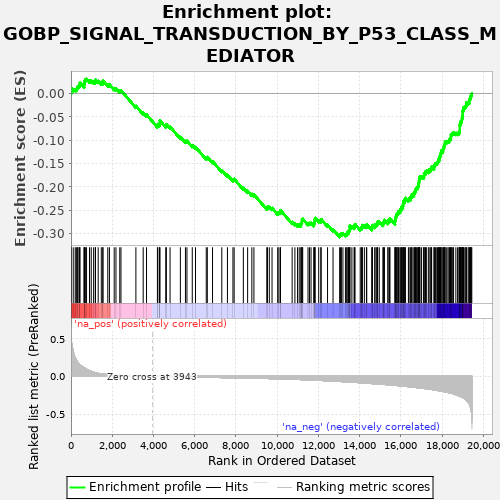
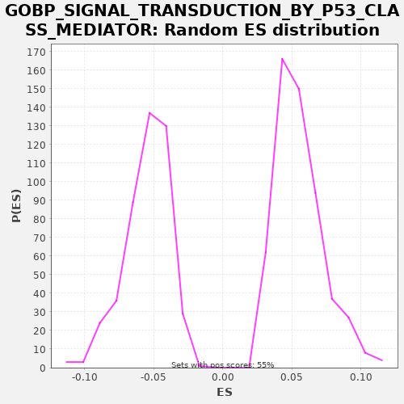

| | | Dataset | X_enriched_genes copy |
| Phenotype | NoPhenotypeAvailable |
| Upregulated in class | na_neg |
| GeneSet | GOBP_SIGNAL_TRANSDUCTION_BY_P53_CLASS_MEDIATOR |
| Enrichment Score (ES) | -0.3075606 |
| Normalized Enrichment Score (NES) | -5.627767 |
| Nominal p-value | 0.0 |
| FDR q-value | 0.0 |
| FWER p-Value | 0.0 |
Table: GSEA Results Summary

Fig 1: Enrichment plot: GOBP_SIGNAL_TRANSDUCTION_BY_P53_CLASS_MEDIATOR
Profile of the Running ES Score & Positions of GeneSet Members on the Rank Ordered List
| SYMBOL | RANK IN GENE LIST | RANK METRIC SCORE | RUNNING ES | CORE ENRICHMENT | | 1 | MIF | 8 | 0.545 | 0.0037 | No |
| 2 | RPL11 | 15 | 0.501 | 0.0075 | No |
| 3 | PRMT1 | 37 | 0.434 | 0.0105 | No |
| 4 | RPL26 | 136 | 0.298 | 0.0095 | No |
| 5 | RPL5 | 229 | 0.236 | 0.0089 | No |
| 6 | HINT1 | 278 | 0.205 | 0.0105 | No |
| 7 | BCL2L12 | 302 | 0.193 | 0.0134 | No |
| 8 | RPL23 | 333 | 0.181 | 0.0160 | No |
| 9 | RPS7 | 393 | 0.159 | 0.0170 | No |
| 10 | NOP53 | 420 | 0.155 | 0.0198 | No |
| 11 | RPF2 | 434 | 0.152 | 0.0232 | No |
| 12 | PCBP4 | 634 | 0.113 | 0.0170 | No |
| 13 | TAF10 | 641 | 0.112 | 0.0208 | No |
| 14 | RGCC | 660 | 0.108 | 0.0239 | No |
| 15 | CDK5RAP3 | 671 | 0.107 | 0.0275 | No |
| 16 | CDK5 | 693 | 0.104 | 0.0305 | No |
| 17 | UBB | 754 | 0.094 | 0.0315 | No |
| 18 | HDAC1 | 899 | 0.074 | 0.0282 | No |
| 19 | PHLDA3 | 981 | 0.066 | 0.0281 | No |
| 20 | HNRNPK | 1098 | 0.055 | 0.0261 | No |
| 21 | SMYD2 | 1180 | 0.048 | 0.0260 | No |
| 22 | CSNK2B | 1187 | 0.048 | 0.0298 | No |
| 23 | DDIT4 | 1319 | 0.039 | 0.0271 | No |
| 24 | CDC25C | 1470 | 0.032 | 0.0234 | No |
| 25 | PAK1IP1 | 1542 | 0.029 | 0.0239 | No |
| 26 | BAX | 1551 | 0.029 | 0.0276 | No |
| 27 | TTC5 | 1785 | 0.022 | 0.0195 | No |
| 28 | WWOX | 1864 | 0.021 | 0.0196 | No |
| 29 | PSMD10 | 2096 | 0.017 | 0.0117 | No |
| 30 | RFC4 | 2182 | 0.015 | 0.0114 | No |
| 31 | PERP | 2366 | 0.013 | 0.0060 | No |
| 32 | BOK | 2424 | 0.012 | 0.0071 | No |
| 33 | HDAC2 | 3148 | 0.005 | -0.0264 | No |
| 34 | PLA2R1 | 3502 | 0.003 | -0.0407 | No |
| 35 | RAD9B | 3664 | 0.002 | -0.0449 | No |
| 36 | MAPKAPK5 | 4192 | -0.001 | -0.0682 | No |
| 37 | SNAI1 | 4213 | -0.002 | -0.0652 | No |
| 38 | SSRP1 | 4299 | -0.002 | -0.0655 | No |
| 39 | RFC5 | 4305 | -0.002 | -0.0616 | No |
| 40 | MSX1 | 4307 | -0.002 | -0.0576 | No |
| 41 | MAPK11 | 4597 | -0.004 | -0.0685 | No |
| 42 | L3MBTL1 | 4627 | -0.004 | -0.0659 | No |
| 43 | EEF1E1 | 4806 | -0.005 | -0.0710 | No |
| 44 | SP100 | 5306 | -0.007 | -0.0929 | No |
| 45 | PRKAG3 | 5552 | -0.008 | -0.1015 | No |
| 46 | RMI2 | 5625 | -0.009 | -0.1012 | No |
| 47 | PMAIP1 | 5883 | -0.010 | -0.1104 | No |
| 48 | TAF9 | 6041 | -0.010 | -0.1145 | No |
| 49 | CNOT8 | 6562 | -0.012 | -0.1374 | No |
| 50 | RFC3 | 6613 | -0.013 | -0.1359 | No |
| 51 | CRADD | 6866 | -0.014 | -0.1449 | No |
| 52 | CDIP1 | 7316 | -0.016 | -0.1642 | No |
| 53 | EDA2R | 7590 | -0.017 | -0.1743 | No |
| 54 | CCNB1 | 7856 | -0.018 | -0.1840 | No |
| 55 | PHF20 | 7915 | -0.019 | -0.1829 | No |
| 56 | DYRK3 | 8361 | -0.021 | -0.2019 | No |
| 57 | GADD45A | 8569 | -0.022 | -0.2086 | No |
| 58 | HIPK4 | 8773 | -0.023 | -0.2150 | No |
| 59 | CD74 | 8874 | -0.024 | -0.2161 | No |
| 60 | TAF13 | 9499 | -0.028 | -0.2445 | No |
| 61 | RAD1 | 9534 | -0.029 | -0.2422 | No |
| 62 | PRKN | 9622 | -0.029 | -0.2426 | No |
| 63 | RRS1 | 9753 | -0.030 | -0.2452 | No |
| 64 | RFFL | 10027 | -0.032 | -0.2553 | No |
| 65 | ELL3 | 10086 | -0.033 | -0.2542 | No |
| 66 | PDK2 | 10155 | -0.033 | -0.2536 | No |
| 67 | PRMT6 | 10164 | -0.033 | -0.2499 | No |
| 68 | TWIST1 | 10728 | -0.039 | -0.2751 | No |
| 69 | CHD5 | 10862 | -0.040 | -0.2779 | No |
| 70 | POU4F1 | 10991 | -0.041 | -0.2805 | No |
| 71 | FHIT | 11071 | -0.042 | -0.2805 | No |
| 72 | TAF12 | 11153 | -0.042 | -0.2806 | No |
| 73 | YJU2 | 11166 | -0.043 | -0.2771 | No |
| 74 | SPRED3 | 11203 | -0.043 | -0.2749 | No |
| 75 | SNAI2 | 11207 | -0.043 | -0.2709 | No |
| 76 | ING2 | 11241 | -0.043 | -0.2685 | No |
| 77 | PML | 11498 | -0.046 | -0.2777 | No |
| 78 | HIC1 | 11569 | -0.047 | -0.2772 | No |
| 79 | BCL3 | 11645 | -0.048 | -0.2770 | No |
| 80 | BATF | 11780 | -0.050 | -0.2799 | No |
| 81 | PIN1 | 11796 | -0.050 | -0.2766 | No |
| 82 | PRKAG1 | 11817 | -0.050 | -0.2735 | No |
| 83 | NOP2 | 11822 | -0.050 | -0.2696 | No |
| 84 | CARM1 | 11844 | -0.051 | -0.2666 | No |
| 85 | ANKRD1 | 12017 | -0.053 | -0.2714 | No |
| 86 | RPS27L | 12119 | -0.054 | -0.2725 | No |
| 87 | ARID3A | 12137 | -0.054 | -0.2693 | No |
| 88 | RMI1 | 12446 | -0.059 | -0.2812 | No |
| 89 | PLAGL1 | 12712 | -0.063 | -0.2909 | No |
| 90 | ING4 | 13033 | -0.068 | -0.3034 | Yes |
| 91 | PIDD1 | 13071 | -0.068 | -0.3013 | Yes |
| 92 | NDRG1 | 13119 | -0.069 | -0.2996 | Yes |
| 93 | TAF9B | 13192 | -0.070 | -0.2992 | Yes |
| 94 | NUAK1 | 13314 | -0.072 | -0.3014 | Yes |
| 95 | TAF11 | 13375 | -0.073 | -0.3004 | Yes |
| 96 | NOC2L | 13400 | -0.073 | -0.2975 | Yes |
| 97 | PYCARD | 13465 | -0.074 | -0.2968 | Yes |
| 98 | BANP | 13477 | -0.075 | -0.2932 | Yes |
| 99 | SESN2 | 13519 | -0.075 | -0.2912 | Yes |
| 100 | BOP1 | 13522 | -0.075 | -0.2872 | Yes |
| 101 | CHEK2 | 13526 | -0.075 | -0.2833 | Yes |
| 102 | PRKAG2 | 13627 | -0.077 | -0.2844 | Yes |
| 103 | RNF34 | 13738 | -0.079 | -0.2860 | Yes |
| 104 | PPP1R13L | 13746 | -0.079 | -0.2822 | Yes |
| 105 | SNW1 | 13780 | -0.079 | -0.2798 | Yes |
| 106 | BDKRB2 | 14031 | -0.084 | -0.2887 | Yes |
| 107 | SHISA5 | 14088 | -0.085 | -0.2875 | Yes |
| 108 | PRKAB2 | 14115 | -0.085 | -0.2848 | Yes |
| 109 | MUC1 | 14137 | -0.086 | -0.2817 | Yes |
| 110 | RRP8 | 14232 | -0.088 | -0.2825 | Yes |
| 111 | AEN | 14334 | -0.090 | -0.2837 | Yes |
| 112 | RFC2 | 14348 | -0.091 | -0.2802 | Yes |
| 113 | RAD9A | 14593 | -0.095 | -0.2888 | Yes |
| 114 | SFN | 14613 | -0.096 | -0.2857 | Yes |
| 115 | TFAP4 | 14618 | -0.096 | -0.2818 | Yes |
| 116 | SOX4 | 14739 | -0.098 | -0.2839 | Yes |
| 117 | BAG6 | 14748 | -0.099 | -0.2802 | Yes |
| 118 | TAF6 | 14828 | -0.100 | -0.2802 | Yes |
| 119 | PRKAA2 | 14867 | -0.101 | -0.2781 | Yes |
| 120 | CNOT10 | 14877 | -0.101 | -0.2744 | Yes |
| 121 | ARMC10 | 14956 | -0.102 | -0.2744 | Yes |
| 122 | TOP3A | 15136 | -0.106 | -0.2796 | Yes |
| 123 | E2F1 | 15150 | -0.106 | -0.2761 | Yes |
| 124 | RBL2 | 15182 | -0.107 | -0.2736 | Yes |
| 125 | CNOT11 | 15206 | -0.107 | -0.2707 | Yes |
| 126 | CHEK1 | 15376 | -0.111 | -0.2754 | Yes |
| 127 | ATRIP | 15380 | -0.111 | -0.2714 | Yes |
| 128 | ATR | 15456 | -0.113 | -0.2712 | Yes |
| 129 | TRIAP1 | 15473 | -0.113 | -0.2679 | Yes |
| 130 | FOXM1 | 15718 | -0.119 | -0.2765 | Yes |
| 131 | PLK3 | 15719 | -0.119 | -0.2724 | Yes |
| 132 | CNOT2 | 15744 | -0.120 | -0.2695 | Yes |
| 133 | RPA2 | 15745 | -0.120 | -0.2654 | Yes |
| 134 | MYO6 | 15771 | -0.121 | -0.2626 | Yes |
| 135 | TAF7 | 15781 | -0.121 | -0.2590 | Yes |
| 136 | HIPK2 | 15826 | -0.122 | -0.2571 | Yes |
| 137 | PPM1D | 15867 | -0.123 | -0.2551 | Yes |
| 138 | TBP | 15890 | -0.123 | -0.2521 | Yes |
| 139 | RHNO1 | 15965 | -0.125 | -0.2519 | Yes |
| 140 | TFDP2 | 15968 | -0.125 | -0.2479 | Yes |
| 141 | KAT5 | 16024 | -0.127 | -0.2466 | Yes |
| 142 | NUPR1 | 16031 | -0.127 | -0.2428 | Yes |
| 143 | TAF5 | 16098 | -0.129 | -0.2421 | Yes |
| 144 | ACER2 | 16109 | -0.129 | -0.2385 | Yes |
| 145 | CASP2 | 16115 | -0.129 | -0.2347 | Yes |
| 146 | PRKAB1 | 16122 | -0.129 | -0.2309 | Yes |
| 147 | MBD3 | 16189 | -0.131 | -0.2302 | Yes |
| 148 | PTTG1IP | 16194 | -0.131 | -0.2263 | Yes |
| 149 | USP28 | 16224 | -0.132 | -0.2237 | Yes |
| 150 | MDM4 | 16369 | -0.136 | -0.2271 | Yes |
| 151 | HUS1 | 16402 | -0.137 | -0.2246 | Yes |
| 152 | CSNK2A2 | 16483 | -0.139 | -0.2247 | Yes |
| 153 | WRN | 16486 | -0.139 | -0.2207 | Yes |
| 154 | TMEM109 | 16534 | -0.141 | -0.2190 | Yes |
| 155 | TAF4 | 16543 | -0.141 | -0.2153 | Yes |
| 156 | PPP1R13B | 16638 | -0.144 | -0.2161 | Yes |
| 157 | CNOT4 | 16650 | -0.145 | -0.2125 | Yes |
| 158 | CDK5R1 | 16678 | -0.145 | -0.2098 | Yes |
| 159 | CDK2 | 16715 | -0.147 | -0.2076 | Yes |
| 160 | CNOT9 | 16727 | -0.147 | -0.2040 | Yes |
| 161 | MSH2 | 16767 | -0.148 | -0.2019 | Yes |
| 162 | MTA2 | 16823 | -0.150 | -0.2007 | Yes |
| 163 | RPS6KA6 | 16841 | -0.151 | -0.1975 | Yes |
| 164 | BRCA2 | 16854 | -0.151 | -0.1940 | Yes |
| 165 | PRMT5 | 16874 | -0.152 | -0.1908 | Yes |
| 166 | RBBP4 | 16885 | -0.152 | -0.1873 | Yes |
| 167 | PRKAA1 | 16902 | -0.152 | -0.1840 | Yes |
| 168 | CHD3 | 16906 | -0.153 | -0.1800 | Yes |
| 169 | E2F2 | 16933 | -0.153 | -0.1772 | Yes |
| 170 | TAF4B | 17008 | -0.156 | -0.1770 | Yes |
| 171 | STK11 | 17110 | -0.160 | -0.1781 | Yes |
| 172 | TAF3 | 17127 | -0.160 | -0.1748 | Yes |
| 173 | AKT1 | 17129 | -0.161 | -0.1708 | Yes |
| 174 | DYRK2 | 17192 | -0.163 | -0.1699 | Yes |
| 175 | CNOT7 | 17205 | -0.163 | -0.1664 | Yes |
| 176 | E2F4 | 17255 | -0.165 | -0.1648 | Yes |
| 177 | PLK2 | 17359 | -0.169 | -0.1661 | Yes |
| 178 | BCL2 | 17367 | -0.169 | -0.1623 | Yes |
| 179 | MAPK14 | 17451 | -0.172 | -0.1625 | Yes |
| 180 | DNA2 | 17480 | -0.173 | -0.1599 | Yes |
| 181 | EHMT2 | 17496 | -0.173 | -0.1565 | Yes |
| 182 | TAF2 | 17609 | -0.179 | -0.1583 | Yes |
| 183 | ZMPSTE24 | 17623 | -0.180 | -0.1548 | Yes |
| 184 | EXO1 | 17648 | -0.181 | -0.1520 | Yes |
| 185 | USP10 | 17678 | -0.182 | -0.1494 | Yes |
| 186 | TNKS1BP1 | 17745 | -0.186 | -0.1487 | Yes |
| 187 | EHMT1 | 17784 | -0.188 | -0.1465 | Yes |
| 188 | ING5 | 17815 | -0.189 | -0.1440 | Yes |
| 189 | RAD17 | 17824 | -0.189 | -0.1403 | Yes |
| 190 | JMY | 17883 | -0.192 | -0.1392 | Yes |
| 191 | CSNK2A1 | 17887 | -0.192 | -0.1352 | Yes |
| 192 | MEAF6 | 17910 | -0.194 | -0.1323 | Yes |
| 193 | MDM2 | 17920 | -0.194 | -0.1286 | Yes |
| 194 | DYRK1A | 17952 | -0.195 | -0.1261 | Yes |
| 195 | BRD7 | 17957 | -0.196 | -0.1222 | Yes |
| 196 | TAF15 | 18042 | -0.200 | -0.1225 | Yes |
| 197 | CDKN1A | 18051 | -0.200 | -0.1188 | Yes |
| 198 | GTSE1 | 18065 | -0.201 | -0.1153 | Yes |
| 199 | SPRED2 | 18097 | -0.203 | -0.1128 | Yes |
| 200 | BRPF1 | 18116 | -0.203 | -0.1096 | Yes |
| 201 | KMT5A | 18137 | -0.205 | -0.1066 | Yes |
| 202 | NBN | 18147 | -0.205 | -0.1029 | Yes |
| 203 | BARD1 | 18208 | -0.209 | -0.1019 | Yes |
| 204 | BLM | 18285 | -0.213 | -0.1018 | Yes |
| 205 | E2F7 | 18339 | -0.217 | -0.1004 | Yes |
| 206 | SIRT1 | 18360 | -0.218 | -0.0973 | Yes |
| 207 | HIPK1 | 18414 | -0.222 | -0.0960 | Yes |
| 208 | RBBP8 | 18430 | -0.223 | -0.0927 | Yes |
| 209 | PAXIP1 | 18433 | -0.223 | -0.0886 | Yes |
| 210 | EP300 | 18471 | -0.225 | -0.0865 | Yes |
| 211 | CNOT6L | 18519 | -0.229 | -0.0848 | Yes |
| 212 | TFDP1 | 18560 | -0.232 | -0.0828 | Yes |
| 213 | BRIP1 | 18671 | -0.242 | -0.0844 | Yes |
| 214 | TOPORS | 18755 | -0.251 | -0.0846 | Yes |
| 215 | TRIM24 | 18819 | -0.260 | -0.0837 | Yes |
| 216 | CNOT3 | 18844 | -0.262 | -0.0809 | Yes |
| 217 | ATM | 18858 | -0.264 | -0.0774 | Yes |
| 218 | RPA1 | 18859 | -0.264 | -0.0733 | Yes |
| 219 | PCNA | 18860 | -0.264 | -0.0692 | Yes |
| 220 | AURKA | 18870 | -0.265 | -0.0656 | Yes |
| 221 | RBBP7 | 18899 | -0.267 | -0.0629 | Yes |
| 222 | KDM1A | 18908 | -0.268 | -0.0592 | Yes |
| 223 | CD44 | 18959 | -0.274 | -0.0577 | Yes |
| 224 | CNOT1 | 18965 | -0.275 | -0.0538 | Yes |
| 225 | HEXIM1 | 18980 | -0.277 | -0.0504 | Yes |
| 226 | RAD50 | 18991 | -0.279 | -0.0468 | Yes |
| 227 | AURKB | 19000 | -0.279 | -0.0431 | Yes |
| 228 | CDK1 | 19001 | -0.279 | -0.0390 | Yes |
| 229 | CNOT6 | 19013 | -0.281 | -0.0355 | Yes |
| 230 | E2F8 | 19041 | -0.285 | -0.0328 | Yes |
| 231 | RPA3 | 19050 | -0.288 | -0.0291 | Yes |
| 232 | SPRED1 | 19109 | -0.299 | -0.0280 | Yes |
| 233 | KAT6A | 19157 | -0.308 | -0.0263 | Yes |
| 234 | MYBBP1A | 19175 | -0.312 | -0.0231 | Yes |
| 235 | BRCA1 | 19176 | -0.312 | -0.0190 | Yes |
| 236 | ATRX | 19265 | -0.341 | -0.0194 | Yes |
| 237 | TAF1 | 19315 | -0.360 | -0.0179 | Yes |
| 238 | TOPBP1 | 19320 | -0.363 | -0.0140 | Yes |
| 239 | TPX2 | 19340 | -0.377 | -0.0108 | Yes |
| 240 | CDKN1B | 19379 | -0.411 | -0.0087 | Yes |
| 241 | DDX5 | 19390 | -0.430 | -0.0051 | Yes |
| 242 | CHD4 | 19420 | -0.465 | -0.0025 | Yes |
| 243 | BTG2 | 19444 | -0.533 | 0.0004 | Yes |
Table: GSEA details [plain text format]

Fig 2: GOBP_SIGNAL_TRANSDUCTION_BY_P53_CLASS_MEDIATOR: Random ES distribution
Gene set null distribution of ES for GOBP_SIGNAL_TRANSDUCTION_BY_P53_CLASS_MEDIATOR